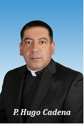
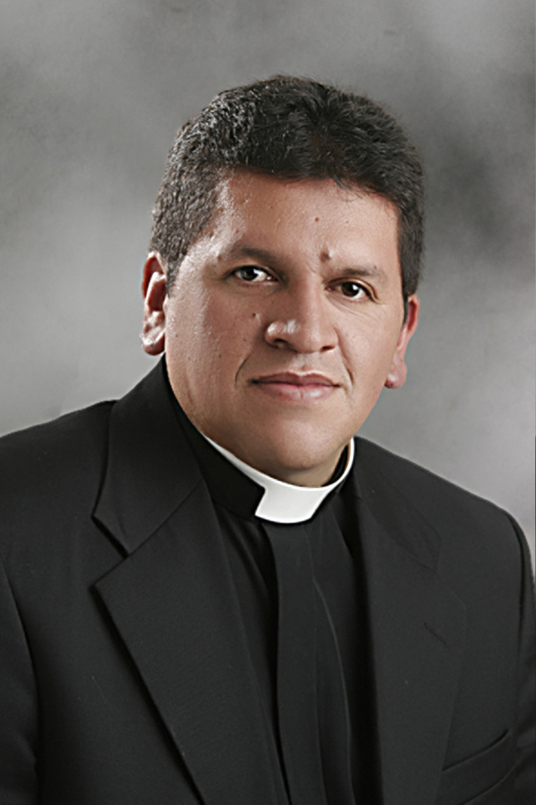
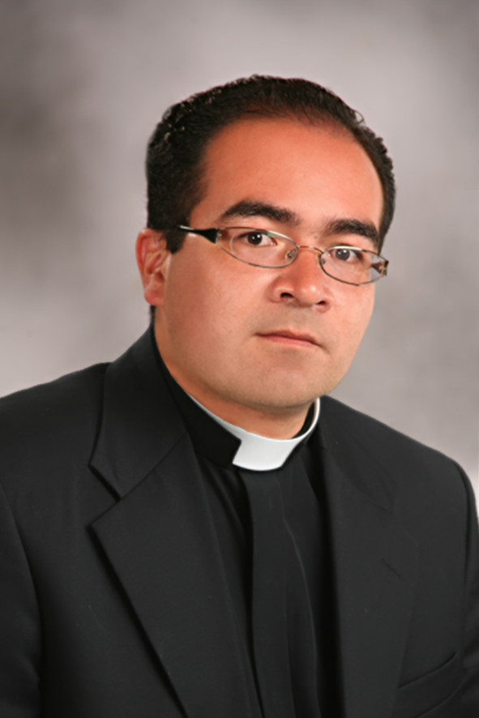

Parroquia San Pedro Mártir - La Catedral
Historia de la Parroquia
La fundación de la Parroquia San Pedro Mártir de Verona está asociada a la fundación de Ipiales, de hecho el nombre Titular de la parroquia obedece a la devoción de los primeros padres Dominicos que llegaron a estas tierras como doctrineros. No se conoce con exactitud el año de la fundación de la parroquia pero se presume que puede estar entre el 1800 y el 1820. Según el libro parroquial No. 2 que es apenas legible se puede ver actas de nacimiento y matrimonios a partir de 1823. Al inicio de este libro se puede leer una nota en la que se aclara que debido al saqueo de la parroquia se perdió el libro primero. La parroquia san Pedro Mártir era la única parroquia en Ipiales hasta que en 1927 se inaugura la parroquia Nuestra Señora de los Dolores bajo la dirección de los padres Filipenses. Cuando se crea a la diócesis de Ipiales el templo parroquial pasa a ser la Catedral y la Casa Cural el Palacio Episcopal. A partir de este acontecimiento han prestado su servicio pastoral los siguientes párrocos el primero de ellos fue el P. Gonzalo Portilla quién estuvo al frente de la Catedral hasta el año 1967, luego le sucedió el P. Carlos Humberto Ortega cuyo ministerio sacerdotal lo desarrollo en esta parroquia durante más de diez años hasta 1978. En un periodo muy corto la Catedral estuvo dirigida por Mons. Bernardo Arévalo desde el año 1978 hasta 1979, luego fue designado como párroco de la Catedral el P. Manuel Chamorro Guerrero quien estuvo al frente hasta 1990, le sucedió el P. Higinio Rodríguez durante ocho años luego vino el P. Ignacio Vallejos que permaneció hasta el año 2004, en este año fue designado como párroco el P. Cipriano Bastidas; en el año 2009 asume como párroco el P. Anselmo Argoty quien permanecerá en la Catedral hasta el año 2011, con él se inicia la construcción de la nueva casa parroquial trabajo que será concluido por el P. Luis Carlos Gavilanes Revelo oriundo de Ospina y quien estuvo al frente de la Catedral desde el mes de noviembre del año 2011 hasta diciembre de 2016, su actual párroco es el padre Hugo Cadena, quien asume esta responsabilidad a partir del mes de enero del año 2017.
.JPG)
Estos hombres han sido quiénes han estado al frente de la Catedral desde que se creó la diócesis, han sido trabajadores abnegados, muy capaces en su ministerio sacerdotal y se han destacado por llevar adelante proyectos enormes que han trasformado esta comunidad parroquial desde que se fue designada como sede del Obispo. Ellos y la colaboración de muchos feligreses han ido construyendo esta bella parroquia la madre de todas, la Catedral del Obispo diocesano. La Catedral, en comunión con toda la Diócesis, sigue el Plan diocesano de comunión y participación, es una parroquia muy activa, con numerosos grupos e infinidad de personas para atender. Así mismo la Catedral ha dado para nuestra Iglesia de Ipiales numerosas vocaciones tanto religiosas como sacerdotales. La fiesta central de la Parroquia se celebra en honor a San Pedro Mártir de Verona un santo dominico que entregó la vida por la defensa de la fe y es desde años atrás el titular de la Catedral, esta veneración se debe a la presencia de los padres dominicos que fueron encargados de la evangelización durante un periodo muy relevante de la historia de Ipiales. Existen muchas cosas y anécdotas que se pueden contar de la Catedral pues su historia como parroquia va más allá de estos 50 años. La historia grande de la Catedral se hace cada día y sigue aun formándose con la ayuda de Dios, el testimonio y el fervor de sus fieles.
PÁRROCO
P. Hujo Cadena Vicarios Cooperadores
Parroquia Medalla Milagrosa
Historia de la Parroquia
En 1.918 se empezó a construir el hospital San Vicente de Paul al norte de la ciudad de Ipiales; el lote del hospital fue donado por los señores: Nicolás Burbano, Isabel Valverde, Hortencia Mora de Ortega y Ruperta Zambrano de Luna, además la construcción del Hospital fue realizada por donaciones de personas de buena voluntad que pertenecían a la región, cuyo objetivo estaría enfocado al beneficio y servicio de la comunidad.Es importante mencionar a una de las personas que entrego su vida y su fortuna en el principio y final de la obra, uno de los pioneros el Doctor Luis Luna quien se preocupó junto con el padre Luis María López Cabrera,
.png)
sacerdote oratoriano de la pa rroquia de San Felipe, en resaltar una buena administración trayendo a las hermanas Vicentinas de Cali en el año 1.931 quienes atendían en el hospital a los enfermos y se ocupaban también del oficio religioso con el capellán el padre Félix María Cadena y las niñas que pertenecían al obrador.La señora Ruperta Zambrano de Luna y Hortencia Mora de Ortega se preocuparon también por el funcionamiento de maternidad para lo cual decidieron construir dicha sala. Por otra parte el Señor Fernando Pérez P. se preocupó por la construcción y el funcionamiento de la sala de cirugía y todo el equipo necesario. El interés y servicio a la comunidad por parte de estas personas era de una gran trascendencia frente a la responsabilidad, el buen servicio y la entrega absoluta, cuyos beneficios recaerían en los miembros que integraban a tal comunidad.
La fundadora del hospital San Vicente de Paul fue Sor Inés Gonzales, hermana Vicentina quien desempeñaba en ese entonces el papel de Directora de la institución.
En 1.923 el Obispo de Pasto Antonio Puello de Bal compro el terreno donde actualmente se encuentra el Templo de Nuestra Señora de la Medalla Milagrosa con la suma de $ 800.000 pesos que seguramente fue registrada la compra en la notaria, para su legislación. Esta compra fue con el fin de ampliar el hospital y construir el templo.La señora Leonisa de Escudero relató acerca de la administración que se recibía en el hospital por parte de las hermanas: "Yo recuerdo que Sor Emilia mandaba en el huerto, en el jardín y en la cría de animales cuyo alimento era donado por Bavaria para su manutención, las flores que Sor Emilia sembraba en el hospital no había en ninguna parte; ella realizaba arreglos florales para vender ayudando de esta manera a los enfermos, adornaba con flores el templo y los corredores del hospital, todo se miraba hermoso, las otras hermanas eran asignadas a las salas de cirugía, parto, pediatría, sala de mujeres, sala de hombres y siempre estaban pendientes de los pacientes".Al transcurrir el tiempo, las Hermanas Vicentinas fueron humilladas, maltratadas y aisladas por el nuevo personal del hospital, hicieron política, las redujeron y les prohibieron prestar sus servicios a los enfermos, o tenían que pedir un permiso para visitarlos y cuidarlos. Más aún se piensa que hubieron muchas anomalías en el hospital, motivo por el cual las Hermanas Vicentinas decidieron dejar el lugar y regresar a su comunidad en la ciudad de Cali el 31 de Octubre de 1.979.En 1.992 se inauguró el nuevo Hospital al oriente de la ciudad vía panamericana, dejando así al Antiguo Hospital deshabitado.
En el año Mariano Universal el 16 de Septiembre de 1.987, fiesta de Nuestra Señora de las Lajas fue fundada esta parroquia, una de las primeras de Monseñor Gustavo Martínez Frías.Y se nombró como cuasiparroco al Padre Hernando Silva Pulido El Tiempo de permanencia en esta parroquia fueron 9 años a partir del 10 de Octubre de 1.987 hasta el 01 de Enero de 1.996.Posteriormente fue nombrado el Padre Braulio Roberto Escobar Guerrero quien es oriundo del municipio de Pupiales, el tiempo de permanencia en esta parroquia fue de 3 años y 8 meses, desde el 02 de Febrero de 1.996 hasta el 02 de Octubre de 1.999.El 09 de Octubre de 1.999 fue designada la Comunidad de los padres Oblatos para el acompañamiento pastoral y la administración de la parroquia, iniciando como Párroco el Padre SANTIAGO GALLO con una permanencia de 1 año y 6 meses, desde el 9 de Octubre de 1.999 hasta el 6 de Abril de 2.002; a partir del 13 de Abril de 2.002 hasta el 18 de Septiembre de 2.004 el párroco que estuvo al frente de la parroquia fue el Padre Luis Eduardo Galeano con un tiempo de permanencia de 2 años y 5 meses.
El presbítero Javier Coral prestó sus servicios como administrador parroquial durante 4 Meses, desde el 2 de Octubre de 2.004 hasta el 15 de Enero de 2.005.El Padre Manuel Chamorro Guerrero fue párroco a partir de 29 de Enero de 2.005 hasta 18 de Enero de 2.014, tiempo de permanencia 9 años y Padre Lorenzo Cipriano Bastidas Yépez como Vicario Parroquial desde el mes de Junio del año 2.011 hasta agosto de 2015. Actualmente ejerce como párroco el Pbro. Serafín Bastidas Bastidas, desde el 18 de Enero de 2.014 hasta la fecha.La parroquia está ubicada en el noreste de la ciudad de Ipiales y limita; al norte con la Parroquia de Nuestro Señor de los Milagros del barrio Centenario, al sur con la Parroquia Nuestra Señora de los Dolores de San Felipe, al oriente con la Parroquia San Juan Bautista de Pupiales, al Occidente con las Parroquias del Niño Jesús del Barrio el Manzano y con la Parroquia de Jesús Sacramentado del Barrio Chambu.
PÁRROCO
Pbro. William Pantoja Sacerdote adjunto

Parroquia Nuestro Señor de Los Milagros – Centenario

Historia de la Parroquia
La creación de nuestra querida parroquia, según el archivo de nuestra Diócesis fue realizada según el decreto 652 que dice lo siguiente: ¨decreto No. 652, Parroquia Señor de los Milagros de Ipiales, Monseñor Alonso Arteaga Yepez, Obispo de Ipiales, CONSIDERANDO: que el crecimiento de la ciudad de Ipiales y las necesidades de los fieles, así como la mejor atención espiritual de los mismos, hace necesario la creación de nuevas parroquias en la misma ciudad. Que ya se dispone de templo u se está organizando el modo de adquirir o construir una casa parroquial y los fieles con el sacerdote propio al frente, están dispuestos a conseguir todo lo que se necesite para el funcionamiento de su parroquia, que se encuentra causa verdaderamente justa y canónica a tenor del canon 1427, para la erección de una nueva parroquia, con centro en el barrio Centenario de Ipiales; y que al Obispo de la diócesis corresponde el derecho de crear las parroquias nuevas. Se ha hecho las consultas necesarias a los señores curas párrocos de la Catedral de Ipiales, de Nuestra Señora de los Dolores y San Juan y se han manifestado de acuerdo. Hemos consultado debidamente a nuestros párrocos consultores diocesanos y ellos han estado completamente de acuerdo con la creación de la nueva parroquia.
DECRETAMOS
Eríjase canónicamente la parroquia del Señor de los Milagros del barrio Centenario de la ciudad de Ipiales, con territorio tomado de las parroquias de la Catedral, Nuestra Señora de los Dolores y San Juan, por los límites siguientes: partiendo del sitio, puente Alto, sobre río Guáitara en la carretera de Córdoba a Ipiales, río arriba hasta la desembocadura de la quebrada ¨ Chilcuanes¨, esto aguas arriba hasta encontrar el camino que baja de las Cruces; por este camino arriba , siguiendo hasta el sur, hasta dar con el camino carreteable que va de la sección el Placer a la Tola de las Lajas, siguiendo este último camino, hasta llegar al sitio el Placer y de aquí por el camino hasta encontrar el barrio El Charco, la avenida parménides Revelo Sánchez; por esta avenida hasta la calle 12 de Ipiales, por dicha calle hasta encontrar la avenida panamericana; por esta hasta encontrar la carretera al Seminario, por esta la vía carreteable a las Animas. En la esquina noroccidental del Seminario. De allí línea recta a caer a la carretera de Ipiales a Pupiales, por esta hasta la quebrada doña Juana o ruidosa, quebrada abajo hasta dar con el camino que va de Las Cruces a los camellones Zuras, por este último camino arriba, hasta encontrar el antiguo camino azucena, por este abajo, a dar con la vía panamericana: por esta hasta la salida de la carretera de Córdoba y por esta hasta el Puente Alto, sobre el Guitara, punto de Partida.
La nueva parroquia, dadas las circunstancias queda constituida con el carácter de "amovinable". Constitúyense patrono y titular de la nueva parroquia en su orden, la Santísima Virgen de las Lajas y el Señor de los Milagros. Asignase como dote base para el sostenimiento del párroco, la suma que existe con este fin y que será completada por las donaciones de los fieles y las participaciones en los aranceles diocesanos del culto. Nombrase primer párroco de la parroquia Señor de los Milagros, al Señor presbítero Don Bernardo Clavijo, con todas las facultades y deberes correspondientes. PUBLIQUESE Y CUMPLASE. Dado en Ipiales el sábado 31 de enero de 1981. Por mandato del señor Obispo Alonso Arteaga Yepez, de Ipiales; Hilario Lucero, canciller.
PÁRROCO
PbroPbro. Sigifredo Tobar
Vicario Cooperador
Pbro. Alexander FlorezSantuario Nuestra Señora de Las Lajas
Historia de la Parroquia
Refiere la tradición que una indiecita, llamada, María Mueses de Quiñones, que se dirigía de Potosí a Ipiales, un día de 1750, junto con su hija Rosa, pasaban por este paraje muy peligroso y una gran tempestad las obligó a buscar refugio en una cueva que allí existía. Entró con mucho miedo por las creencias de la presencia del diablo en ese lugar, pero más grande fue su asombro cuando la niña que era sordomuda de nacimiento le dijo: "mamita, la mestiza me llama" (este fue el primer milagro de la virgen de las Lajas). El 15 de septiembre de 1754 los Ipialeños contemplaron por primera vez la imagen de la Virgen de las Lajas tal como la vemos hoy, es por eso que en esta fecha se celebraba cada año la fiesta tradicional. A raíz de esta aparición, se inicia la construcción de la primera Iglesia pajiza por Fray Gabriel Villafuerte en 1754. El 21 de abril de 1769, Eusebio Mejía y Navarro (cura obrero), inicia la construcción del segundo templo que terminó 7 años más tarde. Entre 1859 – 1893 fue construido el tercer templo por el P. José María Burbano España Lara. A este templo se le llamó ya oficialmente el Santuario de Nuestra Señora del Rosario de las Lajas. El 1 de Enero de 1916 se inicia la bendición de la primera piedra del actual templo, donde participaron en su construcción los capellanes: José María Cabrera, Ángel María chamorro, Justino Mejía y Mejía, quienes hicieron posible este majestuoso templo de estilo neogótico. El 16 de septiembre de 1952 por voluntad del Santo Padre Pio XII, la imagen de la Virgen de las lajas es coronada canónicamente, por esta razón ahora se celebra la fiesta en la fecha de este acontecimiento.El mismo Santo Padre Pio XII, el 30 de agosto de 1954 concede a este Templo – Santuario, el más hermoso de América, el título de BASILICA MENOR.
MONSEÑOR EZEQUIEL MORENO DIAZ, el 15 de septiembre de 1899, en acto solemne bendijo la primera piedra.
El 19 de noviembre de 1904, el padre José María Cabrera tomo posesión de la capellanía. Se dedicó a la dura tarea de conseguir los materiales necesarios y la construcción de los caminos para el transporte de los mismos. El primero de enero de 1916 se inició el trabajo de los cimientos desde el fondo del rio, siendo Obispo de Pasto Monseñor Leónidas Medina. El 16 de agosto del mismo año fue nombrado Capellán el padre Ángel María Chamorro, de talento práctico y mansedumbre admirable. Logró avanzar hasta el primer cuerpo de la Basílica y agobiado por una enfermedad violenta murió el 30 de mayo de 1941. Monseñor Emilio Botero González nombró como Capellán a Monseñor Justino Mejía y Mejía, quien se había desempeñado como vicario parroquial desde 1929. Monseñor Diego María Gómez Tamayo aprobó los planos definitivos y se continúo la obra en honor a la Madre de Dios y de los hombres. En el año 2010 el padre Franklin Betancourth, inició la restauración total de la Basílica, mejoró la presentación del pueblo, adoquino nuevos senderos peatonales. Se inaguró el Teleférico que lleva el nombre de Nuestra Señora de las Lajas, dicha inauguración se realizó en el mes de Noviembre de 2015, con la presencia de Mons, Arturo Correa Toro, del Presidente Juan Manuel Santos, el gobernador de Nariño, Raúl Delgado. Además el 8 de diciembre del mismo año se inagura el alumbrado de todo el Santuario, lo que ha permitido visitar a Nuestra Señora en las noches. Esto mereció celebrar una nueva inauguración. A partir de enero del 2017, asume como capellán del santuario el Padre Luis Carlos Gavilanes.
Capellán
PbroPbro. Sigifredo Tobar.jpg)
Vicario Cooperador
.png)

Parroquia Nuestra Señora de los Dolores – San Felipe
Historia de la Parroquia
Fecha de Creación: 1º de enero de 1927; el 15 de septiembre de 1892 fue colocada la primera piedra del templo actual.Obispo que la erigió: Excmo. Sr. Obispo ANTONIO MARÍA PUEYO DE VAL.Los P. P. Filipenses llegaron a Ipiales en el mes de enero de 1892. Fueron ellos: Ramón María Jurado, Gabriel María Rojas, Luis Gutiérrez Villota, Nicolás Burbano, Leonidas Rojas y Alcides Pérez.El señor Coronel José Francisco Vela, les cedió la capilla denominada la Escala, situada, en el lugar que después ocupó la cárcel. Allí, se veneraba la portentosa imagen de Nuestra Señora de La Escala de Quito, obra del venerable padre Pedro Bedón; Monseñor Manuel José Caicedo, Obispo de Pasto, dispuso que la única parroquia existente en Ipiales, la de San Pedro Mártir bajo el cuidado del padre José María Zambrano, fuera entregada al padre Alcides Pérez, prepósito de la Comunidad Filipense quien a su vez designó como párroco al padre Luis Gutiérrez.
La parroquia permaneció bajo el cuidado de los P.P. del Oratorio, hasta el año de 1927 cuando se fundó la parroquia de Nuestra Señora de Los Dolores, cuando los P.P. del Oratorio habían edificado convento e Iglesia en el sitio Cueva Santa – parte norte de la ciudad, en terrenos del padre Ramón España.
Cabe anotar que el 15 de septiembre de 1892, el padre Ramón María Jurado, colocó la primera piedra del templo actual. Por esos años se incorporaron a la Comunidad de Ipiales, los sacerdotes José María y Félix Cabrera, José H. y Manuel Antonio Sandoval, Fabián Jácome de la Congregación todos ellos de San Felipe de Pasto. El padre Félix María Cabrera, el tres (3) de enero de 1927, abrió los libros parroquiales suscribiendo las diferentes partidas de bautismo, confirmación, matrimonio y defunción. Así se estableció la meritísima comunidad, sobre la cual ha girado el avance, espiritual y social de la ciudad de Ipiales.La parroquia de Nuestra Señora de Los Dolores y el Colegio Mixto San Felipe Neri, son obras que han perdurado con honor y eficiencia, aquí en el extremo sur de Colombia.
FIESTA PATRONAL:
- 26 de mayo: Fiesta de San Felipe Neri
- 15 de septiembre: Fiesta Nuestra Señora de los Dolores
PÁRROCO
P. Guido Orlando OrtízVicario Cooperador
P. Juan Carlos Campaña
Zona Pastoral de Yaramal
P. Jorde BurbanoParroquia Nuestra Señora de Las Mercedes – Puenes
Historia de la Parroquia

No se sabe exactamente el año de su llegada a Ipiales y concretamente al barrio Puenes, pero por tradición oral de sus moradores, sabemos que la preciosa imagen fue traída por un devoto de raza negra al sitio denominado hoy, en su memoria "el puente del negrito".El negro Rosales, tal como se narra en el periodo "La Antorcha" del 31 de agosto de 1947, que Rosales había levantado a la vera del camino y cerca del puente, una pequeñísima vivienda para él y una capilla de bahareque para venerar a la Virgen de las Mercedes, redentora de cautivos.La procedencia de la imagen y como llego a manos del negro Rosales no se ha podido precisar, aunque algunos devotos afirman que es una imagen Española cuya devoción ha sido difundida por los doctrineros Mercedarios de la Provincia de Quito.
La imagen duro muy poco en el poder del negro Rosales ya que este por amistad cedió la imagen a la familia Chacón Mesías quienes la limosnaron y a través de sus descendientes hasta hoy han sido sus celosos guardianes. En 1967 se organizó el primer grupo de fiesteros, los cuales con su loable trabajo recogieron algunas limosnas y se compró el lote donde hoy se tiene este templo y la casa cural. El padre Manuel chamorro guerrero fue quien coloco la primera piedra de la capilla y el padre Jorge Bernardo Clavijo la de la casa cural. Con la donación generosa de joyas personales de muy distinguidas damas de la zona de Puenes y donaciones de muchas otras personas de Ipiales se elaboró una preciosa corona con la cual se quiso reconocer todos los favores recibidos de la virgen de mercedes y en una bellísima ceremonia realizada el 8 de diciembre de 1975, Monseñor ALONSO ARTEAGA YEPEZ, corono esta preciosa imagen como reina de este pueblo que se esfuerza por hacer propias sus virtudes. En el año de 1997 se proclamó la nueva parroquia y gracias al entusiasmo del padre ANSELMO ARGOTTY PORTILLA, primer párroco y una junta representativa de toda la comunidad se dio la iniciativa para el proyecto pro-ampliación de la capilla. Más adelante se formaron las diferentes estructuras parroquiales las cuales fueron la base primordial para llevar a cabo tal obra y sobre todo gracias a las donaciones y el apoyo voluntario de personas de buen corazón, se construyó lo que ahora es el templo parroquial Nuestra Señora de las Mercedes del Barrio Puenes. Finalmente hacemos público reconocimiento de gratitud a todas las juntas de fiesteros de los años transcurridos, a las asociaciones, al Equipo Parroquial de Animación Pastoral. Equipos de coordinación sectorial de los 28 barrios y las 2 veredas, demás estructuras Parroquiales y comunidad en general que con su lucha hoy hacen realidad la creación y construcción de esta nueva Parroquia. A monseñor Gustavo Martínez Frías. Todo nuestro aprecio y agradecimiento imperecedero por darnos esa dicha de ser una parroquia y un aplauso que es también una oración sincera a la virgen de Mercedes para que lo colme de vida y salud durante su existencia.
PÁRROCO
Pbro. Francisco Urbano Vicarios Cooperadores
Pbro. Fabian Diaz
Parroquia Niño Jesús – El Manzano
Historia de la Parroquia
La Parroquia del Niño Jesús, está ubicada en la ciudad de Ipiales, carrera 14 No. 24 – 36/Barrio el Manzano.Como resultado de la mente visionaria y misionera de la señora ROSALBA PINZON DE ROSERO, conjuntamente con un grupo de laicos comprometidos que se reunieron con el único objetivo de contribuir con el crecimiento del Reino de Dios, nace la idea de una nueva parroquia en la Ciudad de Ipiales.En el año de 1998 se presenta la necesidad de empezar a desarrollar el proyecto de conformar esta nueva parroquia y por ende un nuevo templo que albergaría a un sector muy importante de la ciudad de Ipiales que venía creciendo rápidamente.
.png)
Planteada la necesidad, motivados por el DIVINO NIÑO JESÚS, y el liderazgo de la señora Rosalba Pinzón de Rosero, se inició el gran proyecto nombrando la primera junta directiva con representantes de diferentes barrios aledaños al barrio el Manzano; la junta, inicialmente debería tener como objetivo comunicar el llamado de Dios y conformar una gran comunidad católica en un nuevo sector urbano de la ciudad de Ipiales. Cabe destacar el apoyo Espiritual y moral de diversos sacerdotes que acompañaron los primeros pasos de la Parroquia: el P. Anselmo Argotty, el P. Jorge Laguna y el P. Braulio Escobar entre otros.
Con el aval y colaboración de Monseñor Gustavo Martínez Frías, se iniciaron una serie de actividades que generarían el dinero necesario para adquirir el primer lote de terreno donde se colocó la primera piedra de tan ansiado propósito y el pensamiento de todos estaba plasmado en unos planos realizados por profesionales amigos los cuales constaba de un sector social, otro de atención inmediata de salud, la casa parroquial y obviamente el Templo al Niño Jesús. En el año 2005 Monseñor ARTURO CORREA TORO, crea oficialmente la Parroquia y la denomina no del Divino Niño sino DEL NIÑO JESUS y nombró como primer párroco al Padre FRANKLIN M. BETANCOURTH, quien cristalizó mejor la idea, motivó para no hacer una pequeña capilla sino un templo grande y con su entusiasmo, motivó a la gente, gestionó ayudas incluso de Alemania y se adquirió el lote en donde se edificaría el templo parroquial y empezó con él, esta gran obra, siguiendo los planos y acompañamiento de manera voluntaria del arquitecto Andrés Coral. A medida que iba creciendo el templo material, también crecía el templo Espiritual y se formaron las primeras estructuras pastorales
En el año 2009 Monseñor nombró como párroco al Padre VICENTE E. LEGARDA R. quien continuó con la construcción de esta importante obra contando siempre con la generosidad de todas las personas de la Parroquia y del municipio de Ipiales. Las eucaristías inicialmente se celebraban al aire libre, luego en una pequeña capilla en zinc y posteriormente se celebraba en una capilla en guadua. Ahora ya se celebra en el Templo, aunque aún no se ha terminado totalmente lo del piso y lo del altar. Actualmente, hacen parte de la parroquia aproximadamente 1550 familias pertenecientes a los barrios: Manzano, La Frontera, Villa jardín, Miramontes, Miramar, las acacias, Villalba, San Luis, Asvide, Porvenir, San Fernando, la Castellana, Portal de los Alcázares, Bavaria, Terranova y Edificio Avitare.
Fiestas Patronales:
Se celebra en la Novena de Navidad y el aniversario, se conmemora cada 8 de diciembre.
PÁRROCO
P. Lorenzo Cipriano
Parroquia Jesús Sacramentado
DECRETO N° 166(1 De enero de 2014)
EL SUSCRITO, ARTURO CORREA TORO, POR LA GRACIA DE DIOS YVOLUNTAD DE LA SEDE APOSTÓLICA OBISPO DE LA DIÓCESIS DE IPIALES
CONSIDERANDO:
1. Que la Diócesis es una porción del pueblo de Dios, cuyo cuidado pastoral se encomienda al señor Obispo con la cooperación del presbiterio, en la cual verdaderamente está presente y actúa la Iglesia de Cristo Una, Santa Católica y Apostólica (Can. 359, CIC).
2. Que la ciudad de Ipiales por el crecimiento urbanístico y poblacional, necesita en las actuales circunstancias la creación y provisión de una nueva parroquia, en orden a una adecuada organización de la acción pastoral en la ciudad, dentro de laespiritualidad y dinámica de Comunión y Participación.
3.Que los feligreses del barrio Chambú y sus alrededores han profesado su fe a través del culto a Jesús Sacramentado y con gran sentido de Iglesia recuperaron por medio de un contrato de comodato con la junta de acción comunal, el salón que desde hace muchos años viene sirviendo como centro de encuentro de la comunidad Cristiana para celebrar su fe.
DECRETA:Art. 1. En el contexto del año jubilar de la Diócesis de Ipiales, eríjase la Parroquia "Jesús Sacramentado" del barrio Chambú de la ciudad de Ipiales, con todos los derechos y deberes que le asigna el Código de Derecho Canónico. (Can 515. ClC) y que tendrá como suyas las edificaciones actuales del templo parroquial.
Art. 2. La feligresía y el territorio se desprenden de las parroquias: Nuestra Señora de la Medalla Milagrosa y Nuestra Señora de las Mercedes de Puenes, por lo tanto los límites que comprenden la nueva parroquia son los siguientes:
- Al Norte: Vereda Urambud.
- Al Sur: Carrera 7 entre calle 24 y 26b.
- Al Oriente: Calle 26b, calle 27 – vereda Urambud.
- Al Occidente: Calle 23, Calle 24, prolongación carrera 2 – vereda Urambud.
Art. 3. Nombrase al presbítero MANUEL CHAMORRO GUERRERO, como primer párroco de la parroquia con este decreto erigida, a quien por lo mismo se le encomienda el cuidado pastoral de esta feligresía, dentro de las normas y el espíritu del Derecho Canónico y del proceso Pastoral de la Diócesis. La inauguración de la Parroquia y la posesión del Párroco se realizarán en la fecha acordada con el Obispo.
El presente Decreto rige a partir de la fecha de expedición.
COMUNÍQUESE Y CÚMPLASE
Dado en Ipiales a primero de (1) de enero de 2014
Arturo Correa Toro Lorenzo Cipriano Bastidas Y.Obispo de Ipiales CancillerPÁRROCO
P. Manuel Chamorro.png)
Parroquia Cristo Rey
Monseñor Arturo de Jesús Correa Toro, erigió la nueva parroquia de "Cristo Rey" en Balcones de la Frontera (Ipiales), con decreto No° 199 del 2 de Junio de 2016, nos alegramos con nuestros hermanos por esta bendición para su comunidad.
PÁRROCO
Pbro. Juan Alberto Chávez.jpg)